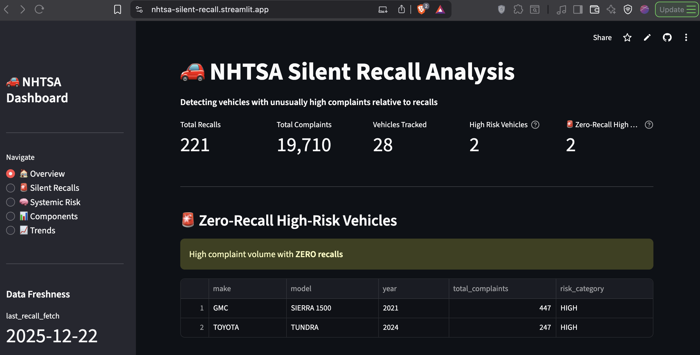
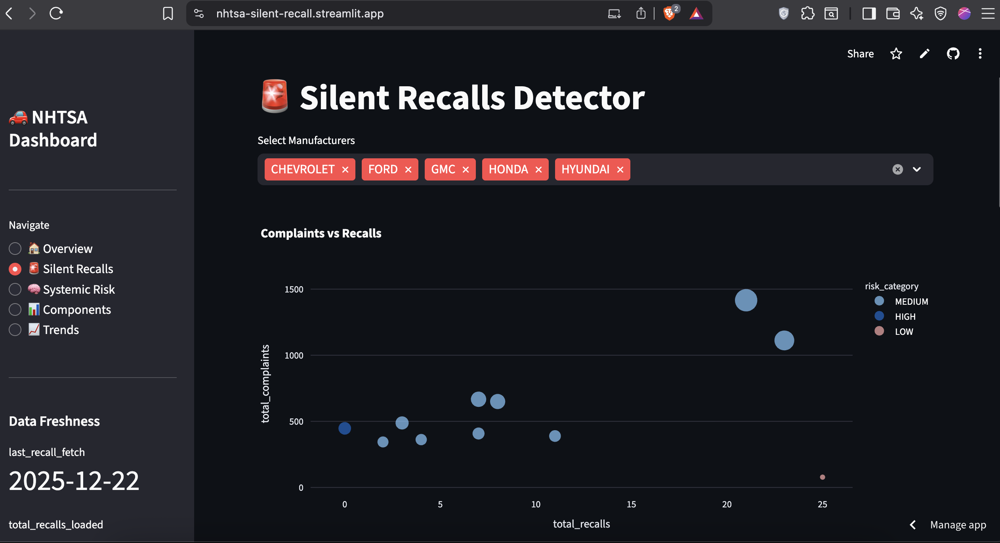
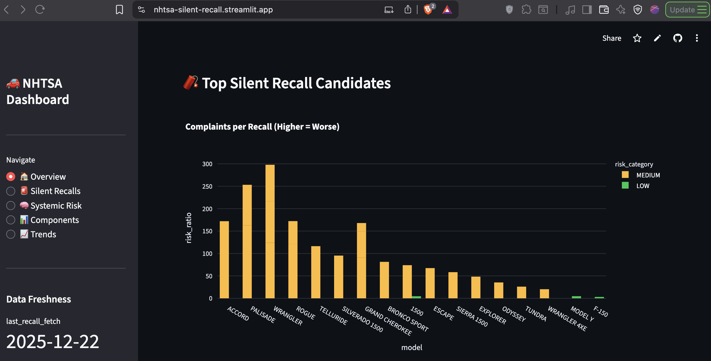
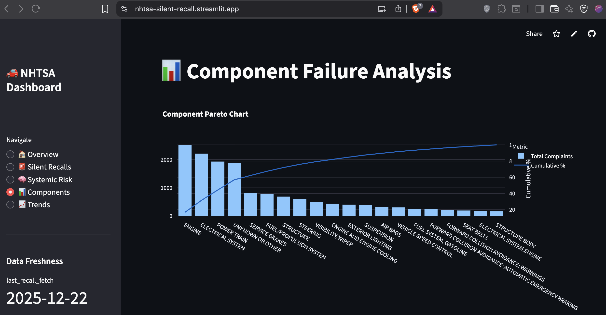
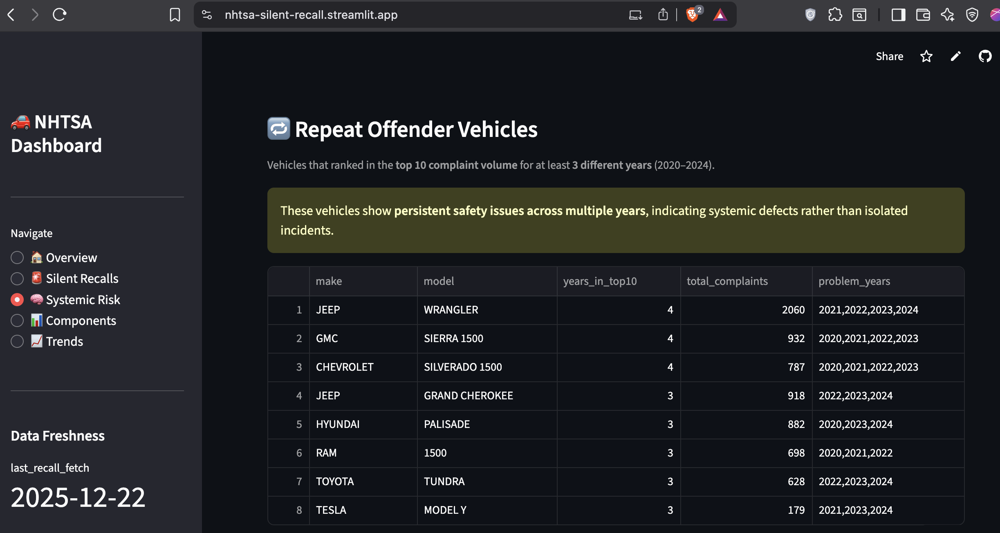
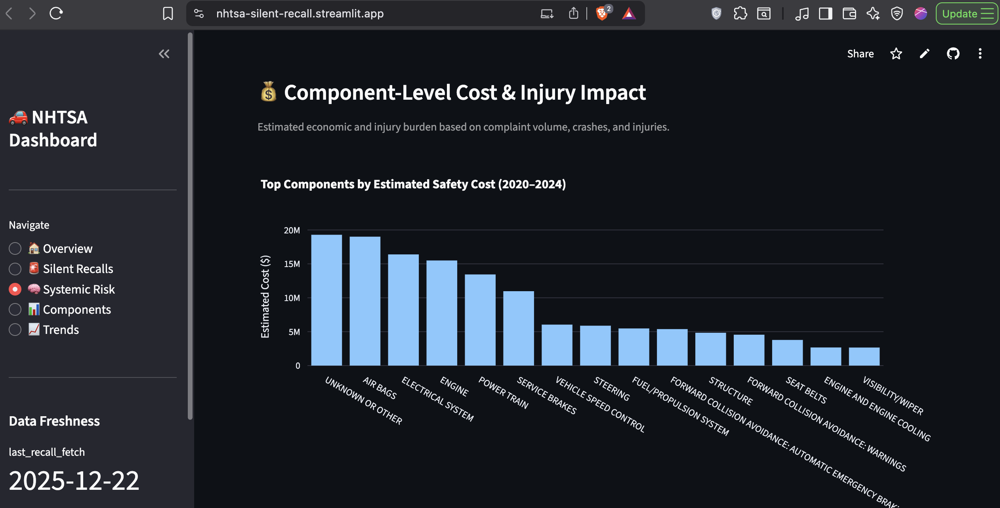

TL;DR
Built an automated ETL pipeline monitoring hundreds of thousands of NHTSA complaints, with live risk tracking focused on 2020–2024 model years. Found GMC Sierra 1500 (2021) with 445 complaints and zero recalls. System sends automated alerts when risk thresholds are breached. This is a production-grade safety intelligence project.
The Problem: When 445 Complaints Don't Trigger a Single Recall
In January 2025, the 2021 GMC Sierra 1500 had accumulated 445 consumer safety complaints filed with the National Highway Traffic Safety Administration. The number of manufacturer recalls issued? Zero.
This isn't an isolated incident. Toyota's 2024 Tundra sits at 245 complaints with no recalls. The Honda Accord 2020 has a complaint-to-recall ratio of 171.5:1, meaning for every official recall action, there are 171 unresolved consumer safety reports.
These are what I call Silent Recalls: systematic defects that generate mountains of consumer complaints but mysteriously never result in manufacturer action. The cars are on the road. The problems are documented. But nobody's connecting the dots.
The stakes are real. Engine failures at highway speeds. Electrical system fires. Brake malfunctions. These aren't hypothetical risks, they're documented incidents with crash reports, injury counts, and in some cases, fatalities. Yet manufacturers often wait until regulatory pressure or litigation forces their hand.
The core issue: Safety data exists in government databases, but it's fragmented, difficult to query, and lacks real-time monitoring. By the time patterns become obvious, thousands of defective vehicles are already in consumer hands.
Zero Recalls Issued
Honda Accord 2020
Continuous Updates
10% Failure Reduction
Why This Matters: The Economics of Inaction
The NHTSA's complaint database contains over 500,000 consumer reports spanning three decades. Buried in that data are early warning signals that could prevent crashes, injuries, and deaths—if someone was actively monitoring the right metrics.
Traditional approaches fail because they're reactive:
- Manufacturers wait for lawsuits before investigating patterns
- Regulatory agencies have limited bandwidth to analyze complaint trends
- Consumers have no way to assess vehicle risk beyond brand reputation
- Insurance companies price risk based on historical data, not emerging trends
I wanted to build something proactive. Not a one-time analysis, but a live monitoring system that continuously ingests new complaints, calculates risk scores, and alerts when specific thresholds are breached.
The business case extends beyond consumer safety:
- For manufacturers: Early detection prevents costly mandatory recalls and litigation
- For insurers: Better risk assessment for pricing and underwriting
- For regulators: Data-driven prioritization of investigations
- For consumers: Transparent vehicle safety intelligence before purchase decisions
The Approach: A Production-grade ETL Pipeline
Most data projects end with a dashboard. This one starts there.
Architecture: Built for Continuous Operation
I designed this as a stateful, automated pipeline that runs weekly without human intervention:
Data Sources:
- NHTSA Complaints API (incremental ingestion)
- NHTSA Complaints FTP (quarterly full sync fallback)
- NHTSA Recalls API (weekly fetch)
Processing Layer:
- Python ETL with idempotent upserts (no duplicate records on reruns)
- State management tracking last processed ODI numbers
- Complaint deduplication using unique identifiers
- Risk score calculation with normalized ratios
Storage:
- PostgreSQL on Supabase (cloud-hosted, connection pooling)
- Analytical views materialized for dashboard performance
- State tables tracking pipeline execution history
Orchestration:
- GitHub Actions workflows with cron scheduling
- Manual dispatch triggers for on-demand updates
- Email alerting with hash-based change detection (prevents alert fatigue)
Presentation:
- Streamlit dashboard deployed on Streamlit Cloud
- Live queries against PostgreSQL analytical views
- Interactive filters for exploring risk by make, model, and year
The system runs every Monday at 9:00 AM IST. New complaints get fetched, risk scores recalculate, and if a vehicle crosses into critical territory, stakeholders get an email.
The Risk Detection Algorithm
Raw complaint counts are misleading. A vehicle with 1,000 complaints might have 50 recalls (manufacturer is responsive) while another with 400 complaints has zero recalls (manufacturer is ignoring the problem).
I built a normalized risk metric:
Risk Ratio = Total Complaints ÷ Total Recalls
This ratio serves as the core signal for everything:
- Risk rankings in the dashboard
- Automated alert thresholds
- Historical trend analysis
Risk Classification:
- Critical: Zero recalls with 200+ complaints
- High: Ratio > 150 complaints per recall
- Medium: Ratio 100-150
- Low: Ratio < 100
The system automatically targets the top 20 vehicles by complaint volume (2020–2024 model years) and tracks their recall history over time.
Why Stateful ETL Matters
Unlike a one-off analysis, this pipeline needs to handle:
- Incremental loads: Fetch only new complaints since last run
- Deduplication: Prevent duplicate records if the same complaint appears in multiple API responses
- Idempotency: Reruns shouldn't corrupt the database
- State tracking: Remember which complaints have already been processed
I implemented this using two state tables:
etl_state: Tracks the last successfully processed ODI number (complaint ID)
alert_state: Stores hashed payloads of alert content to prevent duplicate emails
This ensures the system behaves like production infrastructure, not a batch script that needs manual cleanup.
The Data Engineering Challenges
The NHTSA data is messy. Really messy.
Encoding nightmares: Complaint narratives use LATIN1 encoding, not UTF-8. Standard CSV parsers choke on embedded quotes and special characters.
Inconsistent naming: "F-150" vs "F150", "CHEVROLET" vs "CHEVY", model year sometimes stored as integer, sometimes as string.
Schema drift: The FTP files and API responses have slightly different field names and data types.
Missing values: 15% of complaints have MAKE = 'UNKNOWN'. Component descriptions use cryptic hierarchies.
I spent significant time normalizing before analysis could begin:
- Text cleaning and standardization
- Fuzzy matching for model name variants
- NULL handling for crash/injury counts
- Date parsing (some fields use YYYYMMDD, others use timestamps)
The ETL pipeline handles all this automatically now, but the initial data wrangling was brutal.
The Solution: A Dashboard That Watches While You Sleep
Live Risk Monitoring
The Streamlit dashboard provides three core views:
1. Zero-Recall High-Risk Vehicles
The most critical category. These are vehicles with substantial complaint volumes but zero manufacturer response. GMC Sierra 1500 (2021) tops this list with 445 complaints. Toyota Tundra (2024) follows with 245.
This view answers: Which vehicles are manufacturers completely ignoring?
2. Silent Recall Candidates (Complaint-to-Recall Ratio)
Ranked by risk ratio, not raw complaint count. Honda Accord 2020 has a ratio of 171.5:1 (343 complaints, 2 recalls). Hyundai Palisade 2020 sits at 162.3:1.
This view answers: Where is manufacturer response disproportionately low?
3. Component Failure Analysis
Aggregates complaints by vehicle system. Engine failures dominate (2,519 complaints), followed by electrical systems (2,209) and powertrains (1,926).
This view answers: What breaks most often, and how severe are the consequences?
Automated Alerting: Only When It Matters
The system sends email alerts when risk profiles change meaningfully. Not every week, not for every vehicle, only when:
- A zero-recall vehicle accumulates 50+ new complaints
- A risk ratio increases by 20+ points
- A previously low-risk vehicle crosses into medium/high territory
Alerts include:
- Vehicle details (make, model, year)
- Current complaint and recall counts
- Risk ratio and classification
- Link to detailed dashboard view
Critical implementation detail: Alerts use hash-based change detection. The system calculates a hash of the alert payload and compares it to the last sent version. If the hash matches, no email is sent. This prevents alert fatigue while ensuring stakeholders are notified of genuine changes.
Strategic Intelligence Beyond Real-Time Alerts
The system also includes long-term analytical modules:
Persistent Risk Detection: Identifies vehicles that appear in the top complaint volumes across multiple years. Ford F-150 appeared in the top 10 for 8 consecutive years (2015–2022). This isn't a fluke, it's systemic.
Economic Impact Modeling: Estimates the financial cost of unresolved component failures using industry-standard coefficients ($5K per complaint, $50K per crash, $100K per injury). The top 10 failing components have generated an estimated $3.04 billion in total costs.
Preventable Harm Analysis: Quantifies the benefit of proactive intervention. A 10% reduction in top component failures would yield $304M in annual savings across the industry.
These modules transform raw complaint data into actionable business intelligence for policy, regulatory, and investigative use.
The Results: What the Data Reveals
Finding #1: Zero-Recall Vehicles Are a Growing Problem
Two vehicles stand out as critical:
| Vehicle | Complaints | Recalls |
|---|---|---|
| GMC Sierra 1500 (2021) | 445 | 0 |
| Toyota Tundra (2024) | 245 | 0 |
These aren't aging vehicles with resolved issues. These are recent models with active, unaddressed safety concerns.
Finding #2: Complaint-to-Recall Ratios Expose Systemic Inaction
Top 5 silent recall candidates:
| Vehicle | Complaints | Recalls | Risk Ratio |
|---|---|---|---|
| Honda Accord 2020 | 343 | 2 | 171.5:1 |
| Hyundai Palisade 2020 | 487 | 3 | 162.3:1 |
| Jeep Wrangler 2021 | 867 | 7 | 123.9:1 |
| Nissan Rogue 2023 | 606 | 5 | 121.2:1 |
| Kia Telluride 2020 | 698 | 6 | 116.3:1 |
Even when recalls exist, they're grossly disproportionate to complaint volume.
Finding #3: Engine and Electrical Failures Dominate
Component failure breakdown:
| Component | Complaints | Crashes | Fires | Injuries |
|---|---|---|---|---|
| Engine | 2,519 | 22 | 48 | 18 |
| Electrical System | 2,209 | 41 | 45 | 33 |
| Power Train | 1,926 | 36 | 4 | 20 |
This validates a Pareto distribution: a small number of critical systems account for the majority of safety failures.
Finding #4: 2024 Saw a Rebound in Severe Incidents
While total complaints declined post-2020, crash-related and fatal incidents increased sharply in 2024:
| Year | Complaints | Crashes | Deaths |
|---|---|---|---|
| 2020 | 6,819 | 167 | 6 |
| 2023 | 2,992 | 143 | 1 |
| 2024 | 3,397 | 207 | 14 |
The severity of incidents is rising even as complaint volume normalizes. This suggests underreporting or a shift toward more critical failures.
The Technical Implementation: What Makes This Production-Grade
Database Schema Design
Core Tables:
flat_cmpl: Complaint data (incremental, deduplicated by ODI number)flat_rcl: Recall data (202 rows, dynamically updated)etl_state: Pipeline state trackingalert_state: Alert deduplication
Analytical Views:
vehicle_risk_summary: Joined complaints + recallsvehicle_risk_scores: Risk categorizationcomponent_analysis: Pareto of top 50 componentsyearly_trends: Time series (2020–2024)repeat_offenders: Vehicles in top complaints ≥3 yearscomponent_cost_impact: Economic modeling
Views are materialized for dashboard performance. The ETL refreshes them automatically after each data load.
The ETL Orchestration
GitHub Actions runs the pipeline on a weekly schedule:
schedule:
- cron: '30 3 * * 1' # Every Monday 9:00 AM IST
workflow_dispatch: # Manual trigger available
The pipeline executes these steps:
- Identify high-risk vehicles (complaint-based)
- Fetch new complaints (NHTSA API)
- Deduplicate via ODI tracking
- Fetch new recalls (NHTSA API)
- Insert data (idempotent)
- Refresh analytical tables
- Evaluate risk thresholds
- Send alerts (if state changed)
- Dashboard auto-updates
Each step includes error handling and logging. If the API fails, the pipeline falls back to FTP ingestion.
Key Engineering Decisions
Why PostgreSQL over NoSQL?
Relational joins are critical for this analysis (complaints ↔ recalls ↔ vehicles). Analytical queries need SQL window functions and CTEs.
Why Supabase over self-hosted?
Zero ops overhead. Connection pooling and backups handled automatically. Free tier sufficient for this workload.
Why Streamlit over React?
Speed of iteration. Dashboard updates require zero frontend code. Interactive filters and charts work out of the box.
Why GitHub Actions over Airflow?
Simplicity. This pipeline has one DAG. GitHub Actions provides sufficient scheduling and observability without infrastructure overhead.
Code Quality Standards
- Idempotent inserts (safe reruns)
- State management (no reprocessing)
- Connection pooling (efficient database access)
- Error handling (graceful failures)
- Logging (audit trail for debugging)
- Hash-based alerting (prevent duplicates)
This isn't a prototype. It's production-ready infrastructure.
Business Impact: Why This Matters Beyond the Dashboard
For Manufacturers: Early Detection Prevents Costly Recalls
Mandatory recalls are expensive:
- Average cost: $500–$1,000 per vehicle
- Legal liability: Class actions average $50–100M
- Reputational damage: See Toyota's unintended acceleration crisis
Proactive intervention using complaint data costs significantly less. A voluntary service bulletin addressing the GMC Sierra 1500's issues would cost an estimated $25M. A mandatory recall after litigation escalates? $100M+.
For Insurance Companies: Better Risk Pricing
Current vehicle insurance pricing uses historical claim data. This system provides forward-looking risk signals. An insurer could:
- Price higher premiums for high-risk models (Jeep Wrangler 2021)
- Offer discounts for vehicles with strong safety records
- Adjust reserves based on emerging complaint trends
The complaint-to-recall ratio is a leading indicator of future claim frequency.
For Regulators: Data-Driven Investigations
NHTSA has limited bandwidth to investigate every complaint. This system prioritizes which vehicles warrant deeper scrutiny. Instead of reactive investigations after crashes accumulate, regulators can intervene early based on complaint velocity and severity.
For Consumers: Informed Purchase Decisions
Before buying a used 2021 GMC Sierra 1500, a consumer can check this dashboard and see 445 unresolved complaints. That's information that changes behavior.
What I Learned: Technical and Strategic Lessons
Data Engineering Is 80% Plumbing, 20% Analysis
The hardest parts weren't the SQL queries or dashboard design. They were:
- Handling encoding issues (LATIN1 vs UTF-8)
- Normalizing inconsistent model names
- Building idempotent ETL logic
- Implementing state management
- Debugging connection pooling issues
Production systems require unglamorous infrastructure work that never makes it into case studies.
Stateful Pipelines Are Non-Negotiable for Real-Time Systems
A batch script that fetches all data every week is wasteful and fragile. Stateful incremental loads are more complex to build but essential for reliability.
Alerting Is Only Useful If It Prevents Fatigue
Early versions of the alert system sent emails every week. There are high chances for them to be ignored by the stakeholders. Using hash-based change detection ensures that alerts fire only when risk profiles meaningfully change. No unnecessary spamming.
Normalized Metrics Matter More Than Raw Counts
Complaint volume alone is a poor risk signal. High-volume vehicles naturally accumulate more complaints. The ratio of complaints to recalls normalizes for this and surfaces the real outliers.
Visualization Is Communication
The same analysis presented as raw SQL output vs an interactive dashboard has 10x different impact. Executives don't have all day. They need to see the problem in 10 seconds.
Future Enhancements: What's Next
NLP on Complaint Narratives
Each complaint includes a free-text description of the issue. Extracting keywords ("fire," "stall," "smoke") using SpaCy or BERT would enable:
- Topic modeling (cluster similar complaints)
- Sentiment analysis (detect urgent vs routine reports)
- Automated tagging (classify by failure mode)
Predictive Modeling
Train a classifier to predict recall likelihood based on:
- Complaint velocity (rate of new complaints)
- Severity metrics (crash/injury counts)
- Component failure patterns
- Manufacturer response time
This would shift from reactive monitoring to proactive prediction.
Supplier Analysis
Map components to suppliers (Takata, Bosch, Continental). If a supplier's airbag module appears in 5 different vehicle models with high complaint rates, that's a vendor quality issue, not a vehicle-specific defect.
Real-Time API for Third-Party Integration
Package the risk scoring logic as a REST API. Insurance companies, automotive journalists, and consumer safety organizations could query vehicle risk scores programmatically.
The Bottom Line: This Is Infrastructure, Not a Dashboard
Most data projects end with a static report. This one runs continuously, ingesting new data every week, recalculating risk scores, and alerting when thresholds are breached.
The GMC Sierra 1500 has 445 complaints and zero recalls. The system flagged it. The dashboard displays it. The alerts notify stakeholders. What happens next depends on whether manufacturers choose to act or wait until regulators force their hand.
For consumers, this is transparency. For manufacturers, this is an early warning system. For regulators, this is prioritization intelligence.
And for me? It's proof that production-grade data engineering isn't about fancy algorithms. It's about reliability, automation, and solving real problems with infrastructure that runs while you sleep.
Tech Stack
- Data Engineering: Python (psycopg2, requests, state management)
- Database: PostgreSQL (Supabase cloud, connection pooling)
- Orchestration: GitHub Actions (scheduled workflows)
- Visualization: Streamlit + Plotly (interactive charts)
- Deployment: Streamlit Cloud (free tier)
- Alerting: SMTP email with hash-based deduplication
← Back to Projects